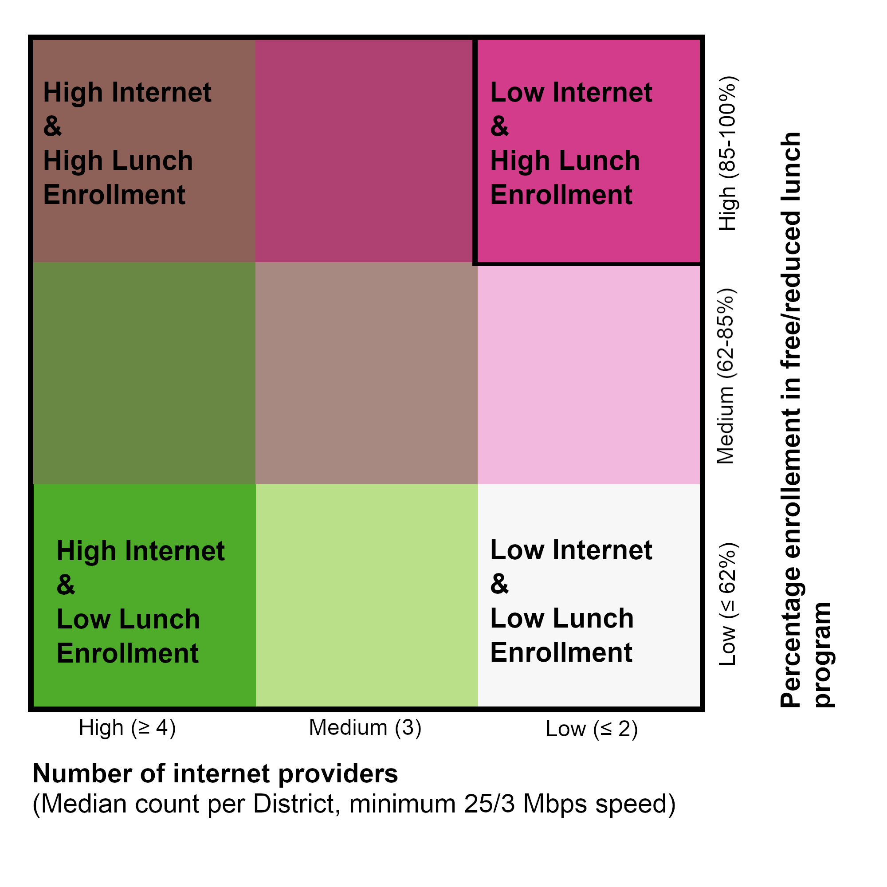
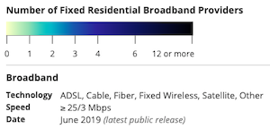

Which school districts have the most students at risk for exclusion from distance learning?
This map visualizes data on free and reduced lunch enrollment (as an indicator of household poverty) and data on the availability of internet providers (minimum speed of 25/3 Mbps).
Click on a district for details on enrollment, lunch program participation, and the average (median) number of internet providers within the district.

The school lunch data was divided this way because the majority of districts have high enrollment - only one district has lunch enrollment less than 40%. Note: This analysis does not include data from private schools.
Zoom in to see details on internet provider availability at the census block level. Explore this data in more detail at the FCC Broadband map.

Sources:
School District data - ProPublica.
Internet providers - FCC.